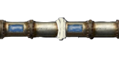

Coating it can immediately stop the freezing but the effect is temporary and it will only work for the leaking pipe.
 Melting the ice takes some time and the pipe will back to the previous state.
Melting the ice takes some time and the pipe will back to the previous state.
 Replacing the pipe can thoroughly fix the issue but will take the longest time. Fixing time will depend on the state of that pipe, the worse the longer.
Replacing the pipe can thoroughly fix the issue but will take the longest time. Fixing time will depend on the state of that pipe, the worse the longer.
Notice that you can only do one thing at one time!